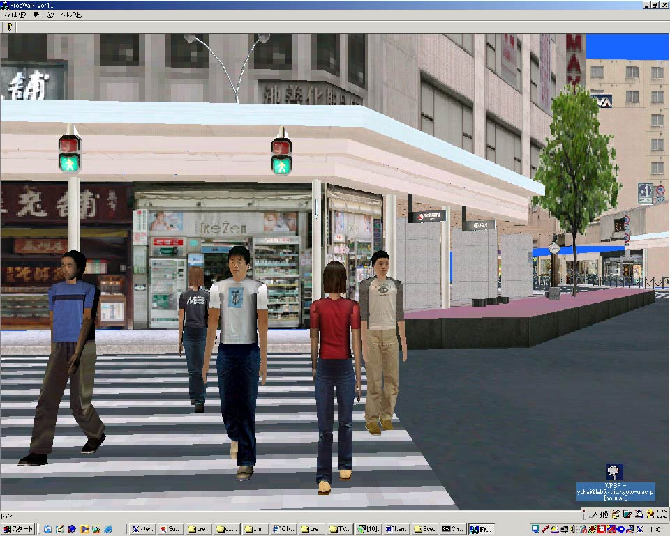
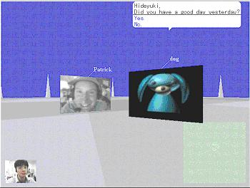

マルチエージェント情報検索

現在の実装では, 各検索エージェントに対応したサーバが用意され ている. そのサーバ上に, それぞれQメッセンジャーが用意され与 えられたQシナリオを実行する. また, 実行途中での他のエージェ ントへの情報伝達はコミュニケーションサーバを介して実現される . Venus&Marsにおけるエージェントの対話例を以下に示す .
ユーザ：「風邪に効く料理を教えて下さい.」と入力.
対話エージェント：「それでは皆さんお願いします」
(「風邪に効く料理」をWEB検索エージェントに伝達.)
WEB検索エージェント: よく分からない表情.
(「風邪に効く料理」を要求分析エージェントへ伝達.)
要求分析エージェント: (「風邪」でデータベースを
検索し,関連キーワード「白菜」を取得）
要求分析エージェント: 「風邪に効くのは白菜料理じゃ.」
(「白菜料理」をWEB検索エージェントに伝達)
WEB検索エージェント:納得した表情.
(「白菜料理」で料理を検索)
WEB検索エージェント:「こんなのでましたよ.」
(検索結果のWEBページを表示)
このように, Venus&Marsでは異なる複数のエージェントが連 携することにより, 協調型の情報検索を実現している.
３次元仮想空間での避難シミュレーション
200X年, 京都の３次元仮想都市[2]で, 京都駅, 地下鉄での災害を 想定した避難訓練が実施され, インターネット経由で市民多数が参 加する.
200Y年, 京都で地震が発生. 火災が地下鉄, 京都駅構内で発生する . 物理空間での状況はセンサから無線ネットワークを通じて刻々セ ンターに送られる. センターでは人々の群れとしての行動が把握さ れパネルに表示される. さらに仮想都市での避難訓練の結果を利用 して, 適切な指示がモバイル端末に送られ, エージェントによる誘 導が行われる.

図２ ３次元仮想空間でのシミュレーション実証実験の第一段階では, インターネットから参加する100人のア バターと, 1000体のエージェントを仮想京都駅で動作させ, 避難シ ミュレーションを実施する. この段階は仮想空間に閉じているため , エージェント群の制御は, １個のQメッセンジャーで実現するこ とができる.
しかし, 第二段階になると, モバイル端末を含め, エージェント群 は分散して配置されることになり, その間の通信帯域も多様となる . そうした環境で効率よくシナリオを記述し実行することは今後の 課題である.
エージェントの社会心理学実験

図3 エージェントを用いた社会心理学実験我々は現在, Stanford大学の社会心理学コース（複数の学生グルー プがそれぞれ実験を計画し実施する）にFreeWalkとQを提供する計 画を進めている. シナリオ記述が, エージェントの開発者と利用者 のインタフェースとなる典型的な例と考えている.